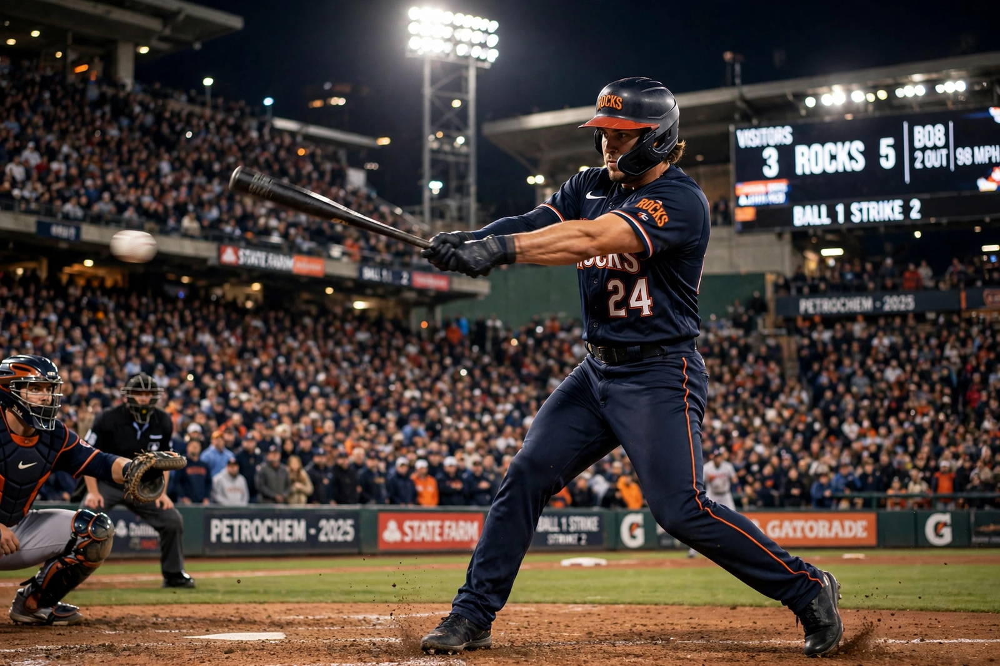

From Wikipedia, the free encyclopedia
| Baseball | |
|---|---|
 A batter swinging at a pitch in a packed professional stadium under lights | |
| Highest governing body | World Baseball Softball Confederation (WBSC) |
| First played | 18th–19th century, United States (modern rules 1845) |
| Team members | 9 per team on the field |
| Equipment | Baseball, bat, glove, protective gear |
| Venue | Baseball field / ballpark |
| Olympic | 1992–2008; 2020; scheduled to return 2028 |
Baseball is a bat-and-ball sport played between two teams of nine players who take turns batting and fielding. The pitcher throws a ball towards home plate, where a batter attempts to hit it with a bat and then run around a sequence of four bases — first, second, third and home — to score runs, while the fielding team tries to record outs by catching, tagging or striking out the batter. A game normally lasts nine innings. Baseball evolved in the United States from older bat-and-ball games and is often called the country's "national pastime"; its professional championship, the World Series, is contested by the champions of Major League Baseball (MLB).
The modern game was codified by the Knickerbocker Base Ball Club of New York in 1845, whose rules — attributed largely to Alexander Cartwright — set the diamond layout, foul lines and the elimination of throwing the ball at runners. Professional baseball began with the Cincinnati Red Stockings in 1869, and the National League was founded in 1876; the American League followed in 1901, and the two leagues first met in a World Series in 1903. For decades Black players were excluded from the majors and played in the Negro leagues; Jackie Robinson broke the colour barrier with the Brooklyn Dodgers in 1947. The sport's most famous early figure, Babe Ruth of the New York Yankees, transformed the game in the 1920s with his home-run hitting.
A baseball field is divided into an infield diamond and an outfield. The batting team sends players to bat in a fixed order; three outs end a half-inning, and after both teams have batted, the next inning begins. A batter is out if he accumulates three strikes, hits a ball caught on the fly, or is tagged or forced out while running. The pitcher–batter duel is the sport's centrepiece, with pitch types — fastballs, curveballs, sliders and changeups — differing in speed and movement. Runs are scored when a runner legally advances around all four bases. Related bat-and-ball games include softball, played with a larger ball on a smaller field, and cricket, the older English game from which some of baseball's antecedents derive.
Baseball is most popular in the United States, Japan, South Korea, Taiwan, Cuba, the Dominican Republic, Venezuela, Mexico and Puerto Rico, many of which supply MLB stars such as Japan's Shohei Ohtani. The World Baseball Classic, first held in 2006, is the leading international tournament for national teams. Japan and the United States have won the most editions between them; Japan defeated the United States in the celebrated 2023 final.
Categories: Baseball | Bat-and-ball games | Team sports